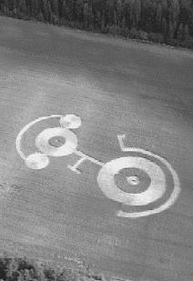

(engl. crop circle, crop-circle phenomenon). Viljaympyrät ovat pelloille ilmestyneitä kuvioita, jotka ovat syntyneet viljan painautuessa maata vasten. Kuviot ovat lähes aina ympyrän muotoisia, joskin myös ainakin yksi viljakolmio (engl. crop triangle) on havaittu. Ympyröitä voi ilmestyä samalle pellolle useitakin. Tällöin niitä yhdistävät suorat ”viivat”. Viljampyröiden ympärillä voi olla myös erillinen ”kehä”. Ympyröiden koot vaihtelevat muutamasta metristä aina 25 metriin saakka.

Viljaympyröitä on havaittu muun muassa Suomessa, Venäjällä, Japanissa, Kanadassa, Yhdysvalloissa sekä erityisesti Englannissa. Ilmiö on inspiroinut useita lehtiartikkeleita, kirjoja sekä cereologiaan keskittyneitä lehtiä. Cereologia on viljaympyröitä käsittelevä pseudotieteellinen tutkimusala. Nimi tulee roomalaisten viljan jumalan Cereksen mukaan.
On olemassa erilaisia teorioita viljaympyröiden synnystä. Erään näkemyksen mukaan ne ovat syntyneet erilaisten luonnonilmiöiden kuten pyörretuulien myötä. Toisen selityksen mukaan viljaympyrät ovat seurausta ylösalaisin lentävistä helikoptereista. Näistä ei kuitenkaan ole kysymys.
Mielenkiintoisimman teorian mukaan viljaympyrät ovat avaruusolentojen aiheuttamia. Ne voisivat olla esimerkiksi avaruusalusten jättämiä jälkiä. Viljaympyräpaikkojen läheisyydessä onkin havaittu outoja valoilmiöitä. Avaruusalusten laskeutumis- tms. paikkoja ne eivät kuitenkaan liene. Viljaympyrät ovat joskus hyvinkin monimutkaisia ja ilmeisen esteettisiä. Voisivatko ne olla viestejä ulkoavaruudesta?
Viestiteoriaa tukee muun muassa vuonna 1987 löydetty vilja”ympyrä”, jossa selkeällä englannin kielellä luki ”WEARENOTALONE” (MEEMMEOLEYKSIN). Cereologi Pat Delgado epäili aluksi, että viesti oli ihmisten tekemä huijaus, mutta tutkittuaan asiaan lähemmin hän ei ollut siitä enää niin varma.
Kysymykseksi nousee kuitenkin se, että miksi avaruusolennot viestisivät ihmiskunnan kanssa peltojen välityksellä? Siis matkustettuaan n kilometriä nämä huippuälykkäät avaruusmatkaajat yrittäisivät kommunikoida meidän kanssamme heinillä? Ja miksi he sanoisivat, että ”MEEMMEOLEYKSIN”?
Viljaympyrät paljastuvat monasti ihmisten tekemiksi huijauksiksi. Jotkut niitä tehneistä ovat tunnustaneet tekonsa. (Tekijöiden piileskely on luonnollisesti ymmärrettävää, koska he haluavat luoda aidon vaikutelman ja koska maanviljelijät eivät suhtaudu tähän ympäristötaiteeseen kovinkaan myönteisesti.)
Huijaamiseen viittaa epäsuorasti muun muassa se, että viljaympyrät ilmestyvät öisin, kun ketään ulkopuolista ei ole paikalla (vrt. parapsykologian ujous-ilmiö). Samoin inhimillisiin tekijöihin viittaavat ilmiön keskittyminen tiettyihin paikkoihin ja viljaympyröiden määrän lisääntyminen mediainnostuksen myötä. Epäilyksiä aiheuttaa sekin, että viljaympyrät monimutkaistuvat ajan myötä, aivan kuin niiden tekemisessä kehityttäisiin oppimisen ja kunnianhimon myötä. On tehty myös havainto viljaympyrästä, johon ilmestyi lisäympyrä viikon kuluttua.
Myös cereologit myöntävät, että huijauksia tehdään. Mutta heidän mielestään joukossa on aitojakin viljaympyröitä (n. 50–99,5%), ja että cereologia-asiantuntijat pystyvät erottamaan huijaukset avaruusolioiden tekemistä. Skeptikot Joe Nickell ja John Fisher ovat kuitenkin huomauttaneet, että asiantuntijoiden näkemykset viljaympyröiden aitouteen viittaavista ominaisuuksista ovat ristiriitaisia. Aitouden arvioimiseksi ei siis ole yksiselitteistä menetelmää, vaan aitous riippuu siitä keneltä kysyy. Asiantuntijoiden kyvyt ovat asettuneet kyseenalaisiksi myös siksi, että he ovat väittäneet oikeiksi sellaisia viljaympyröitä, jotka ovat myöhemmin osoittautuneet ihmisten tekemiksi ”väärennöksiksi”.
Katso: Ufologia.
Kirjallisuutta: Häkkinen 1998; Järvinen 2000a; Karttunen 1994; Nickell 1995b; Nickell ja Fischer 1992; Törnwall 2000.